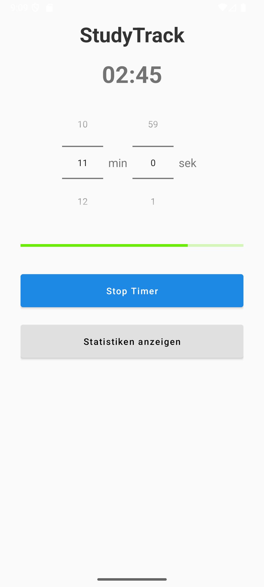
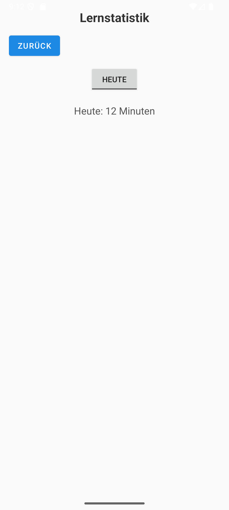
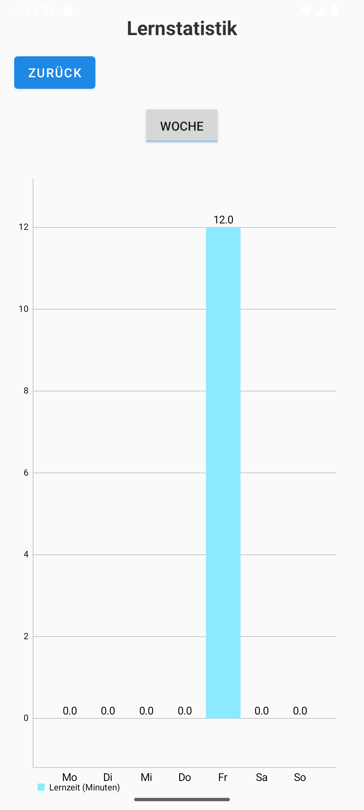

StudyTrack ist eine moderne Android-App, die dir hilft, deine Lernzeiten zu messen und visuell auszuwerten.
Mit einem Timer, Statistiken und einem klaren Design unterstützt dich StudyTrack beim fokussierten Lernen.
GitHub Repository